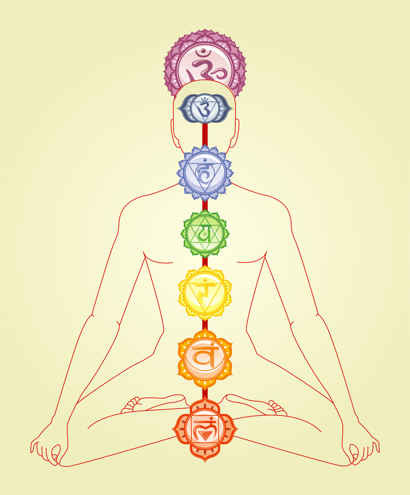

Smells Like Teen Spirituality
UCLAradio.com
Tune in Wednesdays 3-4pm
Ayurvedic Medicine:
Find out your Dosha!A Brief Introduction to Ayurveda
Daily Routine for All Dosha
Food Guidelines for Each Dosha
Recipes
A Comprehensive Guide to Ayurveda
The Eight Limbs of Yoga:
Purchase "Emotional Yoga" OnlineFirst Limb: Yamas
Second Limb: Niyamas
Third Limb: Asana
Fourth Limb: Pranayama
Fifth Limb: Pratyahara
Sixth Limb: Dharana
Seventh Limb: Dhyana
Eighth Limb: Samadhi
Crystal Healing:
A Guide to Crystals and Their MeaningsCleansing/Charging Your Crystals
A Guide to Crystal Magic by Scott Cunningham
Herbal Magic:
Encyclopedia of Magical Herbs by Scott Cunningham